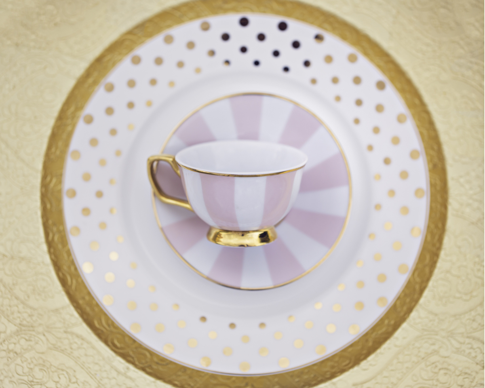

La historia del té inglésmore_vert
La historia del té inglésclose
Los orígenes del té de la tarde se remontan a principios del siglo XIX, un período en el que la cena se tomaba tarde en la noche.
El té de la tarde es una tradición británica de larga data y una visita obligada en Londres.
Desde comidas temáticas hasta estilos tradicionales, este ceremonioso evento está impregnado de historia y se puede disfrutar en algunos de los mejores hoteles, restaurantes y casas de té de Londres, todos ellos ofreciendo su versión individual en esta ocasión británica por excelencia.